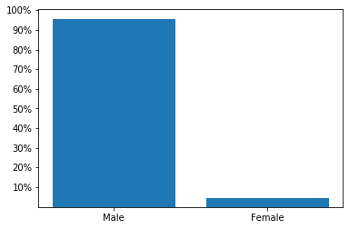
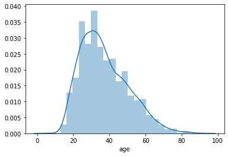
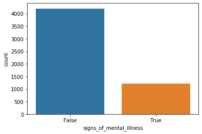
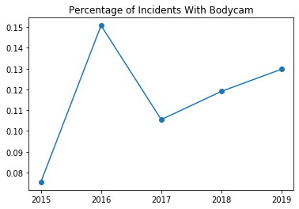
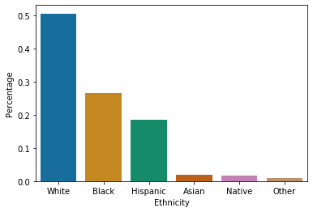
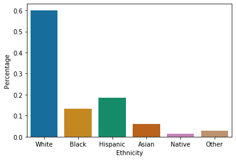
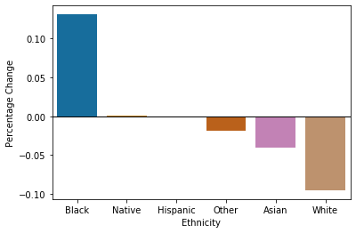
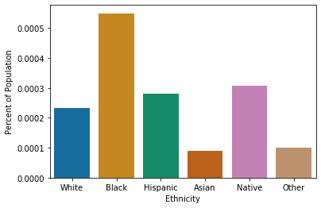
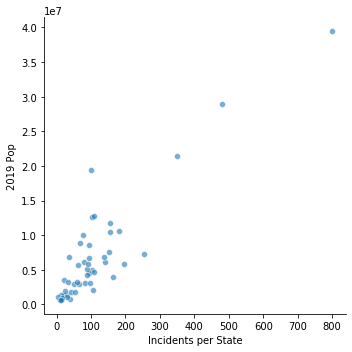
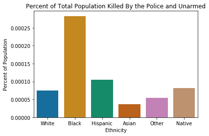

Fatal Police Shooting Analysis
Posted on Wed 05 August 2020 in Projects
I chose this data set as the subject has been in the news a lot of recent. I have no intent to make any comment on the politics and societal factors as there are plenty of people who are more knowledgeable on these subjects. My goal is to go through the data and find points of interest where further discussion and research can be done.
Initializing data
import pandas as pd
import numpy as np
from matplotlib import pyplot as plt
import seaborn as sns
import statsmodels.formula.api as smf
data = pd.read_csv('C:/Users/Scott/Downloads/723010_1257097_bundle_archive/fatal-police-shootings-data.csv')
data.dtypes
df = pd.DataFrame(data)
A little cleaning to get the data ready.
df['date'] = pd.to_datetime(df['date'])
df.gender = df.gender.astype('category')
df.race = df.race.astype('category')
races={'A': 'Asian', 'B':'Black', 'H':'Hispanic','N':'Native','O':'Other','W':'White'}
df['race']=df['race'].map(races)
df=df.set_index(df['date'])
First thing I want to look at are the basic demographics of the people killed and the information around the incidents in these fatalities.
First I want to look at the gender data given.
gender = df.gender.value_counts(normalize=True)
fig,ax = plt.subplots()
ax.bar(['M','F'],gender)
ax.set_yticks([0.1,0.2,0.3,0.4,0.5,0.6,0.7,0.8,0.9,1.0])
ax.set_xticklabels(['Male', 'Female'])
ax.set_yticklabels(['10%','20%','30%','40%','50%','60%','70%','80%','90%','100%'])
plt.show()

Well over 90% of those killed have been male. Based on my conceptions beforehand, I thought there was going to be a large gap. I am surprised on the exact size of the gap.
Next I want to look at the distribution of ages of those involved.
sns.distplot(df['age'], bins=25)
C:\Users\Scott\Anaconda3\lib\site-packages\numpy\lib\histograms.py:824: RuntimeWarning: invalid value encountered in greater_equal
keep = (tmp_a >= first_edge)
C:\Users\Scott\Anaconda3\lib\site-packages\numpy\lib\histograms.py:825: RuntimeWarning: invalid value encountered in less_equal
keep &= (tmp_a <= last_edge)
C:\Users\Scott\Anaconda3\lib\site-packages\statsmodels\nonparametric\kde.py:447: RuntimeWarning: invalid value encountered in greater
X = X[np.logical_and(X > clip[0], X < clip[1])] # won't work for two columns.
C:\Users\Scott\Anaconda3\lib\site-packages\statsmodels\nonparametric\kde.py:447: RuntimeWarning: invalid value encountered in less
X = X[np.logical_and(X > clip[0], X < clip[1])] # won't work for two columns.
<matplotlib.axes._subplots.AxesSubplot at 0x24a57e32358>

The distribution makes sense, because I would expect the vast majority of incidents to involve those between 20 and 30 years old.
This column of data was rather interesting to me. I was very curious to see how many of the cases involved people showing signs of mental illness. I am not sure though on what constitutes a sign of mental illness.
sns.countplot(df['signs_of_mental_illness'])
plt.show()
mental= df['signs_of_mental_illness'].value_counts(normalize=True)
print(mental*100)

False 77.548006
True 22.451994
Name: signs_of_mental_illness, dtype: float64
While clearly not the majority, 22.45% of fatal police shootings involving people showing signs of mental illness is quite significant.
Another group of data offered by the dataset lets you know whether or not a bodycam was used. I think it may be interesting to view this in respect to time to see if they are being used more as they have been longer available.
camera=[]
camera=pd.DataFrame(camera)
for year in ['2015','2016','2017','2018','2019']:
camera[year] =(df['body_camera'].loc[year].value_counts(normalize=True))
camera=np.transpose(camera)
fig,ax =plt.subplots()
ax.plot(camera[True], marker='o')
ax.set_title('Percentage of Incidents With Bodycam')
plt.show()

I checked both the number of incidents with bodycams used and percentage (graphed here) and the graphs had the same shape. 2016 saw the largest total and percentage use with a drop off happening after. I want to say that usage is now rising back up, but there is not enough years to say there is a trend. I would be interested to know the general availability of a body cameras to police in United States and compare it to the 10-15% usage seen between 2016 and 2019.
The next data in the file I want to investigate is the column that lists the ethnicities of those involved.
count=df['race'].value_counts(normalize=True)
count=pd.DataFrame(count).reset_index()
count.columns=['Ethnicity','Percentage']
order=['White','Black','Hispanic','Asian','Native','Other']
sns.barplot(x='Ethnicity',y='Percentage', data=count, palette='colorblind', hue_order=order)
plt.show()

This is the break down of fatalities per each race categorie. This information is not too helpful without overall U.S. population ethnicity data.
quick = pd.read_csv('C:/Users/Scott/Downloads/QuickFacts Jul-16-2020.csv')
pop_data = quick['United States'][9:16].str.strip('%')
pop_data.index = ['Black', 'Native', 'Asian', 'Native Hawaiian', 'Other', 'Hispanic', 'White']
pop_data = pd.DataFrame(pop_data).reset_index()
pop_data.columns = ['Ethnicity','Percentage']
pop_data['Percentage'] = (pop_data['Percentage'].astype(float))/100
pop_data['Percentage'][1] = pop_data['Percentage'][1]+pop_data['Percentage'][3]
pop_data=pop_data.drop(3,axis=0)
sns.barplot(x='Ethnicity', y='Percentage',data=pop_data, order=order, palette='colorblind',hue_order=order)
C:\Users\Scott\Anaconda3\lib\site-packages\ipykernel_launcher.py:7: SettingWithCopyWarning:
A value is trying to be set on a copy of a slice from a DataFrame
See the caveats in the documentation: http://pandas.pydata.org/pandas-docs/stable/indexing.html#indexing-view-versus-copy
import sys
<matplotlib.axes._subplots.AxesSubplot at 0x24a582b9e10>

To make the changes more easily seen I want to graph the differences in percentage.
pop_data=pop_data.sort_values(by=['Ethnicity']).reset_index(drop=True)
count=count.sort_values(by=['Ethnicity']).reset_index(drop=True)
agg=pd.DataFrame([])
agg['Ethnicity']=count['Ethnicity']
agg['Percentage Change'] = count['Percentage'].subtract(pop_data['Percentage'])
plot = sns.barplot(x='Ethnicity', y='Percentage Change', data=agg, order=['Black','Native','Hispanic','Other', 'Asian','White'],palette='colorblind',hue_order=order)
plot.axhline(0, color='black', linewidth = 1)
plt.show()

Here you can see the inequitys with black, white, and asian police involved fatality percents to population percents.
us_pop = pd.read_excel('C:/Users/Scott/Downloads/nst-est2019-01.xlsx', skiprows=3, skipfooter=7, index_col=[0])
us_pop=pd.DataFrame(us_pop)
us_pop.columns= us_pop.columns.astype('str')
yearly=[]
yearly=pd.DataFrame(yearly, index=order)
pop_data.index=pop_data['Ethnicity']
for year in ['2015','2016','2017','2018','2019']:
yearly[year] =(df['race'].loc[year].value_counts()/us_pop[year]['United States'])
yearly=np.transpose(yearly)
for race in order:
yearly[race]= (yearly[race]/pop_data['Percentage'].loc[race])*100
averages = []
averages= (yearly.sum())/5
averages=averages.reset_index()
averages.columns=['Ethnicity', 'Percent of Population']
sns.barplot(x='Ethnicity', y='Percent of Population', data = averages,order=order, palette='colorblind')
<matplotlib.axes._subplots.AxesSubplot at 0x24a583e0ac8>

Here I calculated the percentage of those killed against the overall population percentage per ethnicity. This graph show that in general a little over 2 in every million people who are white in the U.S. get killed every year. This graph shows that the odds in the last 5 years averaged of a black person getting killed by the police is over double that of a white person. This data is imperfect since the ethnicity percent data I used was from the 2010 census, but I believe it is good enough to show general trends with a small degree of error.
census = pd.read_excel('C:/Users/Scott/Downloads/nst-est2019-01.xlsx', skiprows=8, skipfooter=7, usecols=[0,12], index_col=[0])
census=pd.DataFrame(census)
census.columns=['2019 Pop']
census.index=census.index.str.strip('.')
pop1=df['state'].value_counts()
states = {'AK': 'Alaska','AL': 'Alabama','AR': 'Arkansas','AZ': 'Arizona','CA': 'California','CO': 'Colorado','CT': 'Connecticut','DC': 'District of Columbia','DE': 'Delaware','FL': 'Florida','GA': 'Georgia','HI': 'Hawaii','IA': 'Iowa','ID': 'Idaho','IL': 'Illinois','IN': 'Indiana','KS': 'Kansas','KY': 'Kentucky','LA': 'Louisiana','MA': 'Massachusetts','MD': 'Maryland','ME': 'Maine','MI': 'Michigan','MN': 'Minnesota','MO': 'Missouri','MP': 'Northern Mariana Islands','MS': 'Mississippi','MT': 'Montana','NA': 'National','NC': 'North Carolina','ND': 'North Dakota','NE': 'Nebraska','NH': 'New Hampshire','NJ': 'New Jersey','NM': 'New Mexico','NV': 'Nevada','NY': 'New York','OH': 'Ohio','OK': 'Oklahoma','OR': 'Oregon','PA': 'Pennsylvania','PR': 'Puerto Rico','RI': 'Rhode Island','SC': 'South Carolina','SD': 'South Dakota','TN': 'Tennessee','TX': 'Texas','UT': 'Utah','VA': 'Virginia','VI': 'Virgin Islands','VT': 'Vermont','WA': 'Washington','WI': 'Wisconsin','WV': 'West Virginia','WY': 'Wyoming'}
pop1.index=pop1.index.map(states)
new = pd.concat([pop1, census], join='outer', axis=1, sort=True)
new.columns=['Incidents per State', '2019 Pop']
fig=sns.relplot(x ='Incidents per State' ,y ='2019 Pop', kind='scatter', data = new,alpha=0.6)
plt.show()

The relationship looks really linear with the larger the population, the larger amount of fatal police shootings. There is one state that appears to be a bit of an outlier and that is the state with a population of approximately 2,000,000 and around 100 fatal police shootings.
print(census['2019 Pop'][(census['2019 Pop']>1800000) & (census['2019 Pop']<2000000)])
West
Nebraska 1934408
Name: 2019 Pop, dtype: int64
The state with the relatively low fatal shooting to state population ratio is Nebraska.
Next I wanted to look at the background of the individuals who were classified as unarmed.
unarmed=df['armed']=='unarmed'
unarmed_data1=df['race'][unarmed]
unarmed_yearly=[]
unarmed_yearly=pd.DataFrame(unarmed_yearly)
for year in ['2015','2016','2017','2018','2019']:
unarmed_yearly[year] =(unarmed_data1.value_counts()/us_pop[year]['United States'])
unarmed_yearly=np.transpose(unarmed_yearly)
for race in order:
unarmed_yearly[race]= (unarmed_yearly[race]/pop_data['Percentage'].loc[race])*100
unarmed_averages=[]
unarmed_averages= (unarmed_yearly.sum())/5
unarmed_averages=unarmed_averages.reset_index()
unarmed_averages.columns=['Ethnicity', 'Percent of Population']
fig=sns.barplot(x='Ethnicity', y='Percent of Population', data = unarmed_averages, palette='colorblind')
fig.set_title('Percent of Total Population Killed By the Police and Unarmed')
Text(0.5, 1.0, 'Percent of Total Population Killed By the Police and Unarmed')

This graph shows that again a disproportionate number of deaths of those found to be unarmed have occured to black people at a rate five times that of white people.